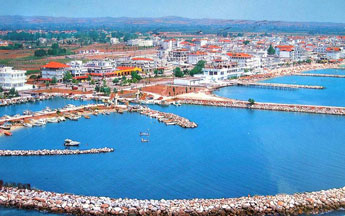
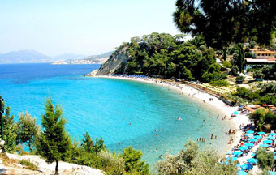

PARALIJA – OSNOVNI PODACI
Paralija je smeštena u podnožju najviše grčke planine Olimp i jedno je od najpoznatijih letovališta oblasti Pieria. Udaljena je oko 60 kilometara od Soluna, a od svima poznatih grčkih letovališta Leptokarije i Nei Pori udaljenost je oko 30 km, a na samo 6 km od najpoznatijeg trgovačkog centra severne Grčke, Katerini.
U istočnom delu grčke oblasti Pieria nalazi se naselje i opština Paralija. Opštinsko sedište se nalazi u Kalitei. Paralija po zadnjem popisu održanom 2011. godine ima 1.124 stanovnika a cela opština broji 6.803 stanovnika. Kada je u pitanju koja privredna grana dominira, onda je to u toku cele godine poljoprivreda, medjutim tokom letnjih meseci turizam predstavlja izuzetno jak privredni resurs.
Paralija je takodje izuzetno poznata po svojim noćnim klubovima, barovima, restoranima, hotelima i tavernama. Na istoku se nalazi zaliv Thermian, a peščane plaže pokrivaju skoro celu obalu. Najbliža železnička stanica i bolnica se nalaze u gradu Katerini koji je udaljen samo 6 kilometara.
Klima u ovom mestu je pogodna zbog blizine Olimpa. Koliko god da je vazduh na nivou obale mora topao i vreo, sa planine uvek duva lagani vetrić koji prijatno rashladjuje. Postoji mnogo organizovanih izleta i ekskurzija na koje možete otići i videti razne stvari vezane za kulturno-istorijsku zaostavštinu Grčke, medju kojima se ističu Olimp, Solunsko groblje, Manastir Meteori i mnogi drugi.
PARALIA – KORISNE INFORMACIJE
Paralia je čuvena po velikom broju prelepih peščanih plaža koje su prekrivene sitnim belim peskom, a voda u moru je besprekorno čista i kristalno bistra. Ovo mesto za letovanje predstavlja jedno od najtraženijih mesta za odmor, i za porodice koje u svom sastavu imaju malu decu, tako i za sve one koji su željni ludog provoda i bogatog noćnog života.
Paralia ima veoma lepu gradsku plažu, koja je nažalost mala, i sa veoma dugim plićakom. Ova plaža je idealna za kupanje male dece koja su u pratnji roditelja, medjutim često se u špicu sezone dešava da na ovoj plaži budu velike gužve. Medjutim ako podjete samo 300-400 metara u pravcu Olympic Beach-a, proći malo pristanište, postoji velika i prostrana plaža dugačka oko 2 kilometra. Ovde postoje tereni za fudbal i odbojku i na ovoj plaži garantovano nikada nema gužve.
More je svakako uvek najlepše ujutru, pa ako vam je ovaj način uživanja u najčistijoj vodi i dok nema gužve prirastao srcu, dodjite izmedju 7:00 i 8:00 na plažu i opustite se do nekih 11:00, dok najveći broj turista ne preplavi plažu. Spomenimo i to da prijatan lagani vetrić sa Olimpa ume da zavara pa ljudi nemaju pravi osećaj koliko je toplo na plaži, te se dešava da vrlo brzo “izgore” misleći da sunce nije jako. Ukoliko volite da se sunčate i istovremeno da posmatrate zalazak sunca, preporučljivo je da odete na plaže van Paralije. Tamo vam senke zgrada neće smetati i ostvariće vam se želja da se sunčate sve vreme
Ako osim letnjeg provoda želite i malo avanture zvane šoping niste mogli doći na bolje mesto. U Paraliji se nalazi veliki broj prodavnica, zlatara, krznara i prodavnica kožne galanterije. Sve je u prodaji po vrlo povoljnim cenama. U svakoj prodavnici barem jedan od zaposlenih je Srbin ili se radi o osobi koja govori srpski, pa zato nikada nema problema prilikom komunikacije. Vezano za kožu i krzno, cene nikada nisu konačne, ko ume da se dobro cenka može znatno spustiti cenu.
 PARALIA – KRATAK OPIS
Paralia je mesto koje prvenstveno služi za letnji odmor i koje ni u kom slučaju ne bi smeli zaobići ako ste na proputovanju kroz ovaj deo severne Grčke. Gostoprimstvo grčkih domaćina o kome ste možda već slušali ili kome ste i sami bili svedoci i ovde je prisutno gde god krenete. Bez obzira na sve što mesto pruža ovo je još jedan od bitnih razloga zbog kojih je Paralia toliko popularna letnja destinacija kod turista iz Srbije, pa i iz čitave Evrope.
Kada su cene u pitanju, one su na nivou ili nešto malo veće od cena u Srbiji. Cene u kafićima, tavernama i klubovima variraju, od pristojnih do poprilično visokih, nivo cena se odredjuje uglavnom u zavisnosti od kvaliteta lokala. Hrana u restoranima je relativno jeftina, i čak su restorani ovde jeftiniji ako ih poredimo sa nekim restoranima u nekim većim gradovima u Srbiji. Ako pogledamo kakva je situacija sa snabdevanjem hranom u prodavnicama, postoji nekoliko većih i manjih marketa, ali tu se nalazi veliki market LIDL, u kome pazari po svoj prilici barem 80% ljudi. Ponuda je ovde stvarno vrhunska i svakojaka, a cene su izuzetno povoljne.
Paralia je pre svega turističko mesto i nema neku preterano značajnu kulturnu ili čak istorijsku vrednost jer vreme nastajanja mesta datira od skoro. Kako god mesto ima izuzetne turističke potencijale i nudi najrazličitije vidove zabave i provoda, a noćni život je više nego dobar pa je za svaku pohvalu.
Pravcem od Paralije do Olimpik Biča pruža se prelepo šetalište ukoliko niste za šoping i gužvu u gradu. Klimatski uslovi u ovoj regiji su zaista izvanredni zato što sa Olimpa stalno duva lagani povetarac, visoke temperature se lako izdržavaju, a sveže noći su idealne za spavanje i odmor, pa za “dopunu baterija” sasvim je dovoljno i samo par sati sna.
PARALIJA – TURISTIČKA PONUDA
Paralia nudi sve što Vam je potrebno za odmor i dobar provod. Tu se nalazi veliki broj prodavnica, restorana diskoteka, noćnih lokala i kafića, naravno tu su veličanstvena priroda, fantastična plaža i nezaboravno lepo more. Paralia nudi apsolutno sve što je potrebno koja će vam obezbediti ugodno proveden odmor, ma koliko da ste izbirljivi u odredjivanju merila kako treba provesti odmor.
Paralia slovi kao mesto gde je noćni provod veličanstven, te je zbog toga ovo letovalište stecište cele Olimpijske rivijere, ali svakako i mnoštva turista iz čitave severne Grčke. Paralija predstavlja kultno stecište zaljubljenika u noćni život koji se odvija u nekoliko ogromnih diskoteka, a traje sve do pojave prvih jutarnjih sunčevih zraka.
Plaža je lepa peščana i zahvaljujući plićaku koji se pruža i do 50-tak metara, kupalište je pogodno za neplivače i malu decu. Gužva na plaži je u sezoni po nekada malo veća, ali i to se može izbeći ako se prošetate nekih 200-300 metara dalje od centralnog dela plaže, gde se uvek nalazi najviše turista. Na tom delu plaže uglavnom uvek ima najviše Srba, dok Grci i turisti iz Zapadne Evrope idu na malo udaljenije delove plaže, prvenstveno zbog toga što se tamo nalazi mnoštva beach barova.
Paralija je srazmerno veliko letovalište, tu dolazi mnoštvo ljudi iz Srbije, pa zbog toga u nekim prodavnicama i buticima čak imaju i prodavce iz Srbije ili Grke koji su naučili srpski jezik. Ponuda novčanika, kožnih torbi, satova, marama i drugog je na veoma visokom nivou. Takodje možete kupiti i značajno dobre kožne jakne, ali obavezno treba se cenkati.